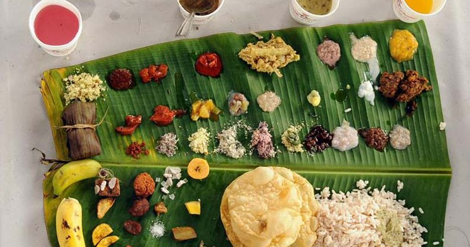

Gavi
Gavi, located in Pathanamthitta district offers its visitors activities like trekking, wildlife watching,
outdoor camping in specially built tents, and night safaris.
The rough journey to Gavi may better be made on a sturdy vehicle like a jeep.
1 / 3

2 / 3

Aranmula
Major attractions in Aranmula is the Valla Sadya which is a celebration in the Hindu temple at Aranmula, Kerala, India. During the festival the village conducts a snake boat race in the Pampa River, and there is a feast at the temple. The Valla Sadhya is conducted on Ashtamirohoni day.Aranmula Valla Sadhya is considered one of India's largest vegetarian feasts, with as many as 64 dishes at one meal.You can also buy artefacts like Aranmula valkannadi.
Major attractions in Aranmula is the Valla Sadya which is a celebration in the Hindu temple at Aranmula, Kerala, India. During the festival the village conducts a snake boat race in the Pampa River, and there is a feast at the temple. The Valla Sadhya is conducted on Ashtamirohoni day.Aranmula Valla Sadhya is considered one of India's largest vegetarian feasts, with as many as 64 dishes at one meal.You can also buy artefacts like Aranmula valkannadi.
3 / 3

Adavi
Eco-tourist destination with rafting, elephant rides & other activities amid a lush green landscape.
Eco-tourist destination with rafting, elephant rides & other activities amid a lush green landscape.